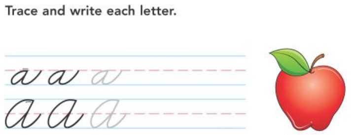

artistic creations
Sometime around the fourth grade, my mom noticed my atrocious handwriting and bought me one of those books where you trace huge letters. It was probably very similar to this:

It amazes me that I didn't revolt… instead, I actually loved it. I credit that short period of time for giving me a love for all things fine motor and boosting my attention to detail.
I first saw the process of inlaying wood in an YouTube video from
The Wood Whisperer. I'd long
loved headstock inlays on acoustic guitars, but would never have figured out that the process was
within my reach. This is a picture frame I made my wife for Christmas, and was my first inlay, aside
from a very crude test run just to make sure I could pull. I was immensely pleased, and the miter joints
gave me 10x the trouble of the inlays. It hangs in our kitchen and to my knowledge is still loved by her.

While we were visitng my wife's family for Christmas, I played a four handed game of cribbage. I had grandma
for a partner, and at one point my father-in-law pipes up: "You sure you're peggin the right way, granny?"
We were magically some 30+ points ahead of my father and brother in law. The connundrum was easily solved by
rule #27 (all grandmothers are infallible) and we won. With inlays fresh in my mind, however, I conceived of
the idea to embed an indicator on down-and-back style boards so one would always know which way to peg. This
was the first of such boards, made for my friend Dan as a birthday present.

The fist cribbage board went so well that I made another for my father in law. I didn't like how on the
first board the bare ends revealed that the center strip was inlaid. In addition, the cove essentially
reduces the inlay strip down to a razor edge. For this board, I gave it a border in maple to hide the end grain
as well as the inlay depth. I thought the look was quite an upgrade. When drilling out the 5/8 in. hole for the pegs,
I had the board standing on it's end in a vice. It came loose and mangled the opening of the hole, so I
improvised with a rounded square insert instead of a simple collar.

Immediately after my father-in-law, my brother-in-law had his birthday, so it was on to another board. I
returned to my favorite lumber yard, Forest Products Supply
for some new wood. They do a lot of cabinetry and flooring and one can pick through a cutoff bin for "scraps,"
which they'll sell for ridiculously cheap. This board is made from Jatoba (Brazilian cherry). I still wanted
to hide the inlay ends, but I abslutely didn't want to hide the sides since they were so beautiful. That led
to going with a new style of an inlaid top "border," which I've stuck with on subsequent boards.

After making all of the boards above, this was my first commissioned piece! It was
quite exhilarating to make something with and for someone else. The image links to imgur
where I have a lot of pictures from the build, as much for myself as to show my friend
how it came together. Google Sketchup was even used to model up some potential designs.